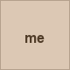

|
 (your name) — |
Welcome to FriendsterFriendster is a way to meet people — through the friends of your friends. Build your Circle of Friends, leave testimonials, and discover people who share your interests. Click Edit profile to introduce yourself. Friends in your circleContinuity (still true in 2009): Friendster founded 2002 (Jonathan Abrams); mass boom ~2003. By 2007 the legend is “slow pages / graph that broke” — users moved to MySpace (still mass social · News Corp since Jul 2005) and campus Facebook (still gated). This room is the older social graph you still remember. Museum reconstruction — localStorage only. No real accounts. 2007 Start |